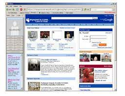
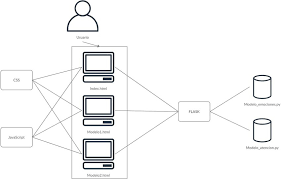
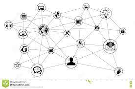

Línea del Tiempo Evolución de la Web
Web 1.0

Internet que solamente brindaba información y no existía interacción con el usuario
Web 2.0

Es cuando el usuario final puede interactuar con el contenido en internet por medio de redes sociales, e incluso crearla por medio de Blogs.
Web 3.0

Se asocia a la web semántica, un concepto que se refiere al uso de un lenguaje en la red. Por ejemplo, la búsqueda de contenidos utilizando palabras clave.
Web 4.0
Se centra en ofrecer un comportamiento más inteligente y más predictivo, de modo que podamos, con sólo realizar una afirmación o una llamada, poner en marcha un conjunto de acciones que tendrán como resultando aquello que pedimos, deseamos o decimos.
Regresar al inicio